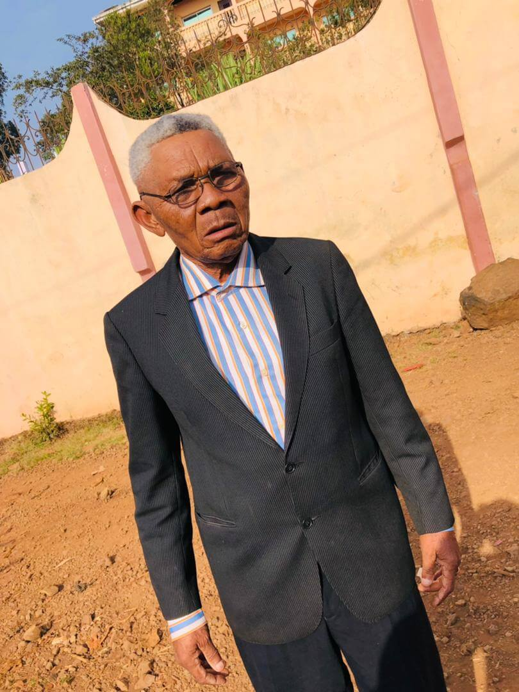
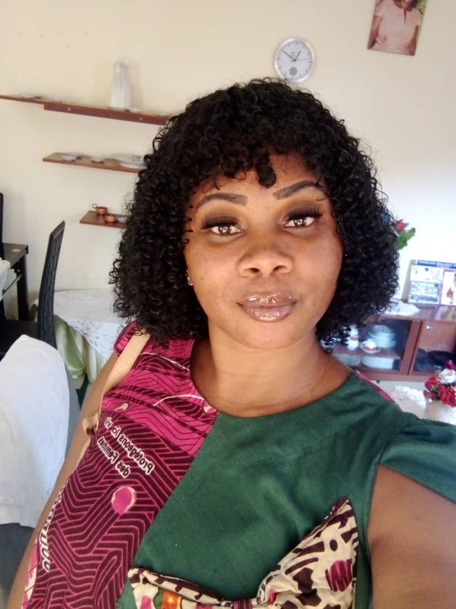
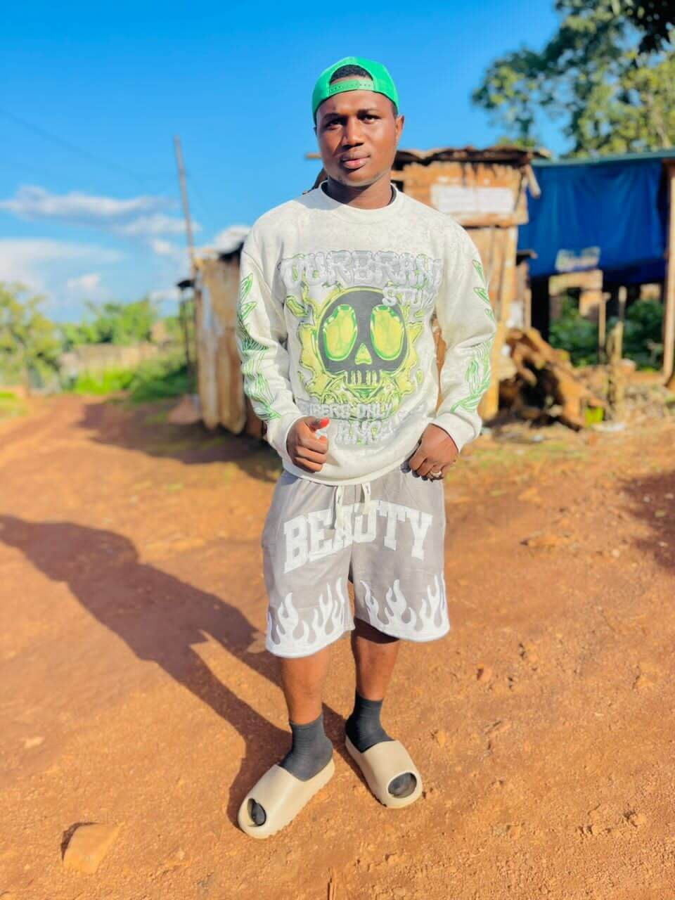
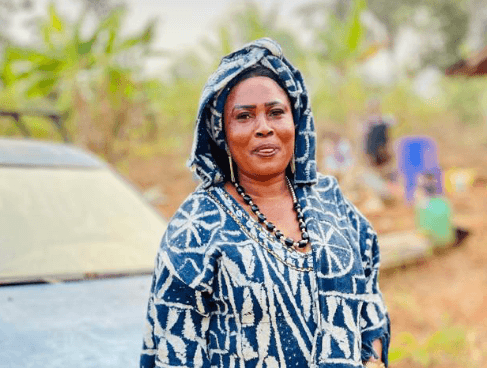
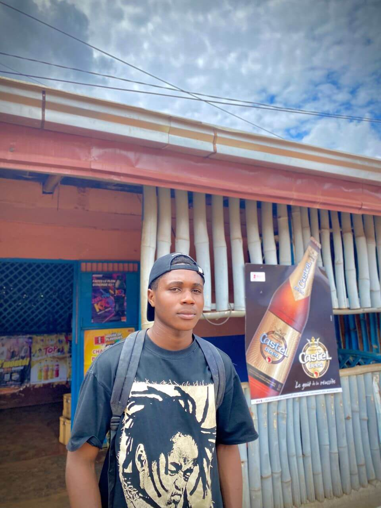
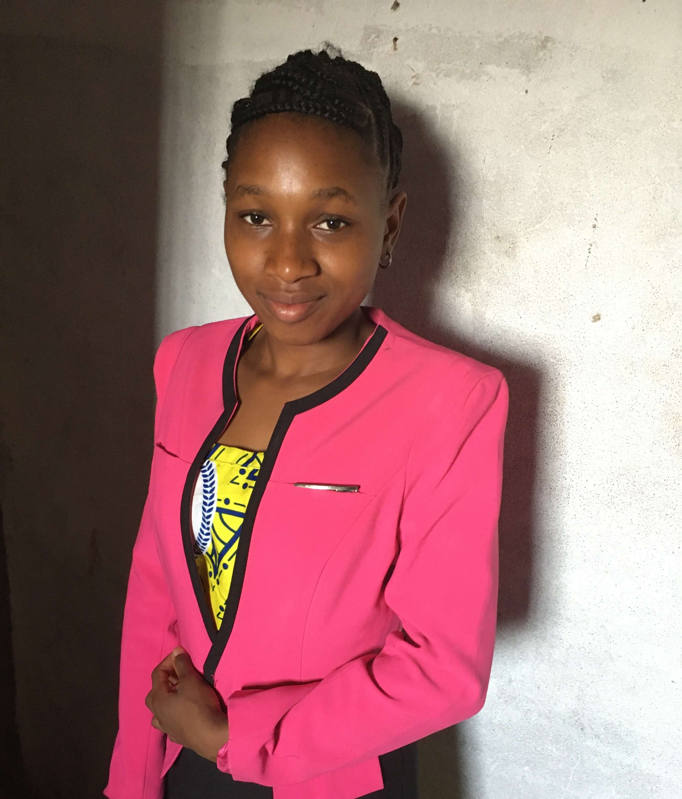

1 / 12

dit « Père Coach »
J'ai combattu le bon combat, j'ai achevé la course, j'ai gardé la foi. Désormais, la couronne de justice m'est réservée. 2 Timothée 4 : 7–8
Sportif d'exception, GOUANG Justin effectue son premier cycle au Lycée Classique de Bafoussam, avant de rejoindre le Collège Saint-Michel à Douala, où il décroche son BEPC, son Probatoire et son Baccalauréat. Il poursuit ensuite ses études supérieures à l'INJS de Dschang, obtenant son Master qui lui ouvre les portes de l'enseignement en tant que professeur d'EPS catégorie A2.
Attaquant de pointe redoutable dans sa jeunesse, il fait les beaux jours de l'Aigle de Dschang avant de porter avec fierté les couleurs du Racing Club de Bafoussam — son club de cœur, qu'il dirigera ensuite en tant que coach pendant 15 années de bons et loyaux services.
Professeur d'EPS, il exerce successivement au Collège Malanguai et au Lycée de Oyack à Bafoussam, puis au Lycée Classique, au Lycée Bilingue et au Collège Saint-Thomas. Il laisse l'empreinte d'un pédagogue rigoureux, passionné par l'éducation de la jeunesse camerounaise de Douala et de Bafoussam.
Début d'un parcours scolaire marqué par la rigueur et l'amour du sport.
Obtention des diplômes du secondaire tout en conciliant études et pratique sportive de haut niveau.
Formation d'élite qui forge à la fois le sportif de haut niveau et le futur enseignant. Il joue en parallèle comme attaquant de pointe pour l'Aigle de Dschang.
Plus de deux décennies consacrées à l'éducation physique et sportive de la jeunesse camerounaise. Un pédagogue rigoureux qui laisse une empreinte durable dans chaque établissement.
15 années de bons et loyaux services sur les bancs de touche du Racing Club de Bafoussam. Après cette carrière bien remplie, il prend une retraite méritée dans sa demeure de Bafoussam, qu'il a bâtie avec fierté.
Il s'est éteint en laissant derrière lui le souvenir d'un homme protecteur, modèle de force, d'intégrité et de générosité pour ses enfants et petits-enfants.
Cliquez sur une photo pour l'agrandir et parcourir l'album
Attaquant, puis coach passionné du Racing Club de Bafoussam pendant 15 ans.
Professeur d'EPS rigoureux, dévoué à l'éducation de la jeunesse camerounaise.
Sportif complet, il aimait la natation comme discipline de vie et de caractère.
Les joutes stratégiques au jeu de dames — un esprit toujours en éveil.
Ancien scout dès 18 ans, il a gardé toute sa vie les valeurs de service et de droiture.
Sa plus grande réussite. Père dévoué et grand-père aimant — un pilier pour les siens.

Mon amour de père, tu m'as tellement aimé et chéri de ton vivant. Tu m'as donné tout ce que tu avais... Je n'est jamais manqué de rien à tes côtés papa chéri. Tu t'es sacrifier pour moi. Tu m'a appris à me battre dans la vie. Je t'aime Daddy comme je t'aimais t'appeler. Tu part auprès de Dieu maintenant de la veille sur nous tes enfants. Je t'aime papa à jamais dans mon cœur.

Mon père, mon héros. Tu m'as appris à connaître la vie d'un homme, tu m'as appris à manger à la sueur de mon front, tu m'as appris à marcher seul que d'être mal accompagner. Papa mon héros je serais pas trop long — garde nous, protège nous et que le père tout puissant t'accueille dans son royaume. Papa GOUANG Justin dit Père Coach, vas et repose en Paix.

Justin mon homme, le père de mes enfants. Tu laisse une blessure dans mon cœur et dans le cœur de nos enfants. Mes saches que tu as laissé un vide et je ne saurais comment combler cela. Car à jamais tu restera gravé dans nos cœurs Justin. Vas et repose en paix — à toi les fleurs et à nous les pleurs.
Papa je te remercie pour les bons moments passés avec toi. C'est dur de se séparer mais Dieu à décider ainsi et je sais que tu vas bénir ta progéniture là-bas dans les cieux. Merci papa je t'aime et sache que ton véritable tombeau c'est nos cœurs. Repose en paix mon super héros.

Tu as été et tu seras toujours mon modèle. J'espère que tu me guideras comme tu l'as toujours fait et que tu seras toujours fière de moi grand homme, mon père, mon papa. Nous resterons fort comme tu nous l'as montré, comme tu l'as toujours été. Je t'aime fort papa. Que ton âme Repose en Paix.

Mon petit papa chéri, à mes yeux tu as toujours été un grand modèle et tu le seras à jamais. Aujourd'hui tu n'es plus présent en chair et en os mais je sais que tu es là juste prêt de nous. Tu demeures le meilleur papa du monde. Nous t'aimons à jamais Coach. Repose en Paix.
Les familles suivantes ont la profonde douleur d'annoncer le décès de leur père et grand-père, PAPA GOUANG Justin, survenu le 4 Avril 2026 à Bafoussam.